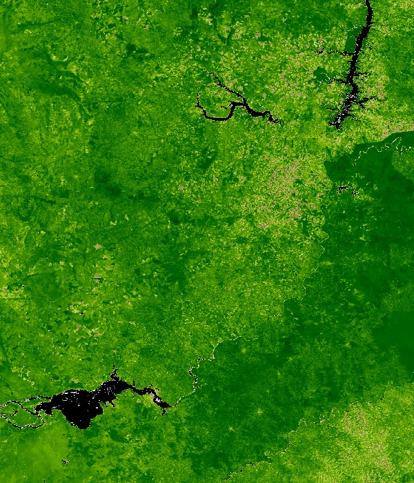
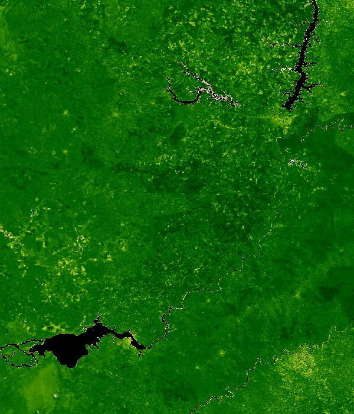

Tu campo
¿Qué te importa más?
Ajustar a mano
0 = no me importa, 5 = me importa mucho.
Lo que no siembro
Por falta de comprador, de equipo o de tiempo. Lo que marques sale de la comparación.
¿Y si lloviera distinto?
Es una simulación para explorar: multiplica la lluvia de todas las campañas. No es un pronóstico. La temperatura no cambia, porque la caché guarda los días de calor ya contados.
Armar mi rotación
Qué rotación equilibra mejor tus prioridades
Ver los números
Agua, calor y heladas salen de los datos de NASA POWER. Suelo cubierto, diversidad de cultivos (familias: leguminosa y gramínea) y cosechas salen del calendario de cada rotación. Debajo de cada barra se ve cuántos puntos vienen de cada origen.
En verde y negrita: el mejor valor de cada columna. Cuando ninguna rotación tuvo heladas, todas reciben el máximo en esa dimensión, lo que sube todos los puntajes por igual.
¿Se sostiene el resultado?
Quién queda primera, campaña por campaña
La base (A) tiene una sola cosecha y suelo descubierto en invierno: si tus prioridades valoran suelo cubierto o cosechas, no puede quedar primera. Es la referencia contra la que se comparan las demás. Heladas: trigo y maíz cuentan helada en etapa media, la soja en la emergencia (supuesto).
¿Y si las fechas de siembra están corridas 10 días?
Calendario de cada rotación (supuesto, a validar con fuentes locales)
Evidencia NASA
Lluvia frente a la demanda de agua de la soja, campaña por campaña
Cuando la línea pasa por encima de la barra, la lluvia no alcanzó para lo que el cultivo pedía. La campaña del escenario está resaltada.
El Niño y La Niña en los datos de tu zona
Agrupamos las campañas según el índice oceánico ONI de NOAA durante el ciclo de la soja (trimestre nov–ene). La lluvia, el déficit y el calor salen de NASA POWER; el índice solo sirve para agrupar y no entra en el puntaje.
Control de coherencia: el agua del suelo del modelo frente a la de NASA POWER
Comparamos el agua que nuestro balance deja en el suelo durante el ciclo de la soja con la humedad de zona radicular que publica NASA POWER (GWETROOT, modelo MERRA-2). Son magnitudes distintas: lo que importa es si suben y bajan juntas.
Desde el satélite: verdor de la vegetación en enero
NDVI de MODIS/Terra (16 días, 250 m), sudeste de Paraguay. Enero de 2022, en plena sequía, muestra manchas amarillas y marrones en la zona sojera; enero de 2024, una campaña lluviosa, se ve verde parejo.
Elige cualquier enero desde 2002 en cada lado para comparar. Los años con ↓ se descargan de NASA GIBS y necesitan conexión; 2022 y 2024 están guardados.

ItapúaAlto Paraná
ItapúaAlto ParanáImagen de contexto (NASA GIBS / Worldview, capa MODIS_Terra_L3_NDVI_16Day, área 28°S–24,5°S, 57°O–54°O). Los círculos marcan los puntos de Itapúa y Alto Paraná. No entra en el puntaje.
Qué tan seguro es esto
exploratorio
Por qué es exploratorio
Datos que faltan y cambiarían el resultado
- Capacidad de agua del suelo de tu lote (textura, profundidad).
- Fechas reales de siembra y cosecha en tu zona y variedad.
- Costos y precios: el modelo no calcula ingresos.
Validación con datos que el modelo no usó
El modelo se armó solo con NASA POWER y las fórmulas de FAO-56. Aquí lo comparamos con lo que pasó de verdad en los campos de Paraguay.
Otros contrastes
Límites de esta validación
Pregúntale a tus datos
Elige una pregunta. Las respuestas se arman con los números de tu zona, tu escenario y tus prioridades. No hay inteligencia artificial: cada respuesta sale del mismo cálculo que ves arriba y funciona sin conexión.
Cómo funciona
- Dato NASAPOWER diario desde 2001: lluvia, temperatura, radiación
- IndicadoresAgua que faltó, calor en floración, heladas
- Tus prioridadesSeis controles que tú mueves
- Decisión exploradaRanking explicado, evidencia y confianza
- Descargamos datos diarios de NASA POWER (2001–hoy): lluvia, temperatura y radiación en el tope de la atmósfera.
- Calculamos la evapotranspiración de referencia (ET0, Hargreaves, FAO-56) y la demanda de cada cultivo con sus coeficientes Kc (FAO-56).
- Para cada rotación hacemos un balance de agua del suelo (el agua que guarda tu tipo de suelo pasa de una campaña a la siguiente) y medimos: demanda de agua no cubierta, días de calor en floración, heladas en etapa sensible, parte del año con suelo cubierto, diversidad de cultivos (familias botánicas en la rotación) y cosechas por año.
- Tus prioridades ponderan esas dimensiones. Mostramos cuánto aporta cada una al puntaje, sin cajas negras.
Fuentes: